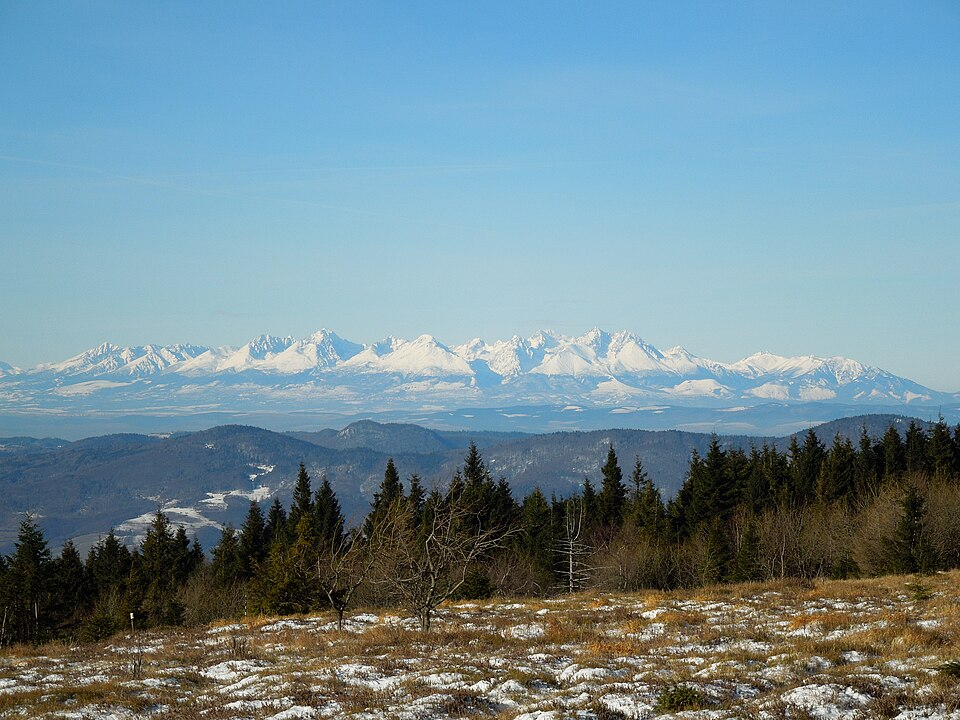
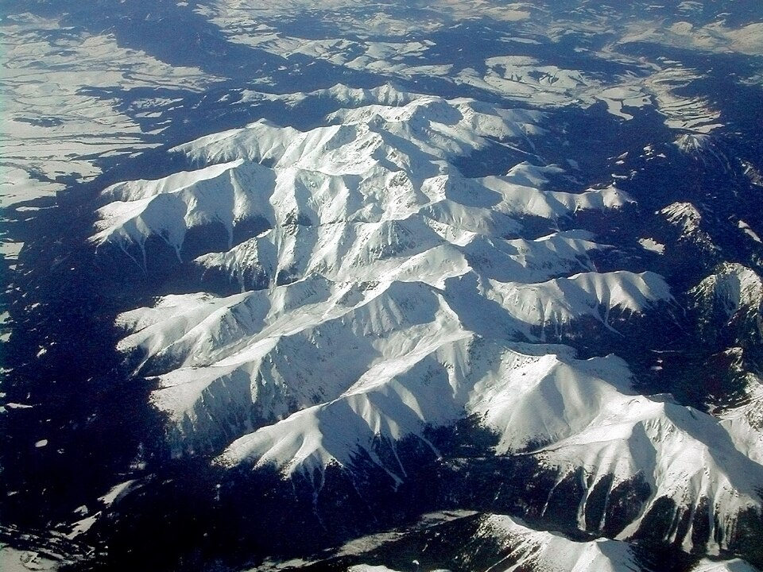

Roháče
Celodenná hrebeňovka cez plesá v Západných Tatrách. Odmenou je výhľad na celú dolinu.
- Čo si zbaliť
- Oblečenie
- bunda
- čiapka
- Jedlo
- čaj
- čokoláda
- Náročnosť
- vysoká
- Čas túry
- približne 7 hodín

Oravský hrad
Hrad na vysokej skale nad riekou Orava. Ideálny tip, keď je počasie neisté.
- Náročnosť
- nízka
- Čas prehliadky
- približne 2 hodiny

Oravská priehrada
Vodné dielo so Slanickým ostrovom umenia. Výlet loďou spravuje OP-LD.
V lete obľúbené kúpanie aj cyklookruh okolo nádrže.

Kvačianska dolina
Romantická tiesňava s drevenými mlynmi v Oblazoch. Nenáročná prechádzka pre celú rodinu.
- Náročnosť
- nízka
- Čo vidieť
- vodné mlyny, vodopád

Juráňova dolina
Tiesňava s lávkami nad potokom, súčasť TANAP. V zime býva zatvorená.
- Náročnosť
- stredná
- Čas túry
- približne 3 hodiny

Babia hora
Najvyšší vrch Oravských Beskýd (1725 m). Náročný výstup, ale výhľad až do Poľska.
- Náročnosť
- vysoká
- Nadmorská výška
- 1725 m n. m.